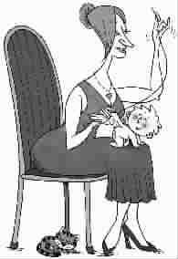

向驯兽师学家教
○王 悦编译
我在厨房里洗盘子的时候，儿子满头大汗地跑进来：“妈妈，嘟嘟不见了……”
嘟嘟是他的玩具猴。说完，小家伙又乒乒乓乓地向客厅奔去，我们家的狗小迪紧跟在他身后，不知道自己的主人为什么这么生气。
如果在平时，我会说：“别担心，嘟嘟丢不了……”或者“早告诉你不要随便乱放玩具……”不论哪种说法都只会让儿子更着急。不一会儿，失踪的小猴就会引发一场家庭危机。但现在我把全部注意力集中在潮湿的盘子上，既没转身也没吭声，因为我正在试验一套刚从驯兽师那儿学来的教育方法。
儿子司考特快5岁了，跟所有的调皮鬼一样，他可爱之极，但也有不少坏习惯；而我也和所有母亲一样，希望有一个完美的宝贝儿子，一个懂事乖巧的“模范儿子”。于是，我开始着手改造儿子。试验过不少育儿专家的“绝招”之后，我发现他们的方法在儿子身上统统失效。不知不觉地，我抛弃了理论和建议，拿起家长最常用的武器——唠叨和责罚。结果非但儿子的坏习惯没改掉，我们的关系反倒变得紧张了。
就在这时，事情有了转机。因为要编辑一本跟驯兽学校有关的书，我开始每天都到一所驯兽师学校旁听老师讲课。如何教大象画画，如何训练海豚做空翻，如何叫鬣狗跳芭蕾舞，如何让狒狒溜滑板……职业驯兽师说这些奇迹背后的原理其实很简单：如果动物做了你希望它做的事，奖励它；如果它做了你不希望它做的事，装作没看见。
我突然想，这条原理对另一类固执但又可爱的物种——儿童，是否也适用呢？回家以后，我迫不及待地把驯兽师的技巧用在儿子身上。如果他把一个玩具放回玩具箱里，我立刻连声夸奖，如果儿子放了两件进去，我就亲吻他。与此同时，我对乱扔在地板上的玩具视而不见，一句责怪的话也不说。在我的鼓励之下，地板上的飞机大炮、猫狗猴子越来越少了。
第二次去驯兽学校听课，我又学了一招——不相容法则。老师告诉我们，非洲冠羽鹤喜欢站在驯兽者的头顶或者肩膀上，为了让它们改掉这个坏毛病，驯兽师训练冠羽鹤站在一块彩色的毯子上。因为鹤一次只能站在一个地方，习惯站在毯子上以后，它们就不会站到人的头顶上了。老师解释说，想训练动物不做某件事的时候，可以教它们做另一件事，如果这两件事符合不相容法则，你的目的就达到了。
以前做饭的时候，儿子总爱跟在我身后添乱，不是缠着我给他念童话书，就是跑到炉灶前跃跃欲试。学会不相容法则后，我在厨房里离炉灶最远的角落，放上一小盘洋芋片和调味汁，并告诉儿子要等到晚饭以后才能吃。果然，儿子每次一跑进来就被角落里的零食吸引过去，趁我不注意偷偷拿上两块，然后带着战利品匆匆逃走。他的小动作我其实都看在眼里，只是没出声。从此以后，我再也不用担心小调皮在炉灶跟前捣乱了。
活学活用了驯兽师的技巧以后，我发现儿子越来越可爱了。驯兽学校的宣传语成了我的座右铭：“永远不是动物的错。”当我的育儿计划遭到挫折的时候，我不再怪罪儿子，而是采取新的办法。
另外，驯兽师还告诉大家，动物有些本性就连最高明的驯兽师也无法改变。我相信小孩子的天性也一样，如果儿子有些小毛病实在改不掉，我也能心平气和地接受了，俗话说得好：你不能教猫咪跳水。
(艳军摘自《婚姻与家庭》2006年11月下半月刊，喻梁图)